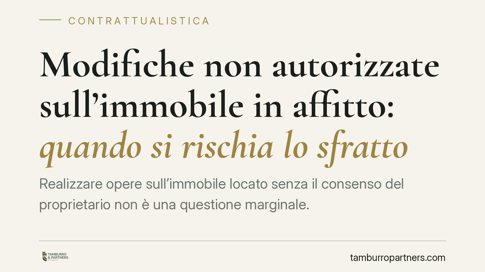

Modifiche non autorizzate sull'immobile in affitto: quando si rischia lo sfratto
Realizzare opere sull'immobile locato senza il consenso del proprietario non è una questione marginale. Quando le modifiche incidono in modo significativo sulla consistenza del bene, possono fondare la risoluzione del contratto e lo sfratto. Il punto critico è la soglia di gravità: non ogni intervento conta allo stesso modo, e l'onere della prova grava sul locatore.

Il principio: l'inquilino deve servirsi della cosa secondo l'uso pattuito
Il conduttore non è libero di disporre dell'immobile come fosse proprio. L'art. 1587 n. 2 c.c. impone di servirsi della cosa locata «per l'uso determinato nel contratto» e con la diligenza del buon padre di famiglia. Da qui discende il divieto di alterare la destinazione e la consistenza del bene senza il consenso del proprietario.
La giurisprudenza di legittimità è consolidata nel ritenere che modifiche strutturali non autorizzate possano integrare un inadempimento idoneo a giustificare la risoluzione del rapporto. Il punto non è la novità del principio, ma la sua applicazione concreta: non tutte le opere hanno lo stesso peso, e il giudice è chiamato a una valutazione caso per caso.
Addizioni, migliorie e obbligo di restituzione
È utile distinguere le figure che il codice tiene separate. Le addizioni (art. 1592 c.c.) sono opere che il conduttore può, in linea di principio, togliere alla fine della locazione, salvo il diritto del locatore di trattenerle. I miglioramenti (art. 1593 c.c.) seguono una disciplina diversa, con indennizzo dovuto solo a condizioni precise e in genere previo consenso del proprietario.
A questo si aggiunge l'obbligo di restituire l'immobile nello stato in cui è stato consegnato (art. 1590 c.c.), salvo il deterioramento d'uso normale. Le alterazioni non concordate possono quindi generare, oltre al rischio risolutorio, una responsabilità per i danni e l'obbligo di riduzione in pristino.
Il vero nodo: la soglia di gravità
La risoluzione non scatta in automatico. L'art. 1455 c.c. richiede che l'inadempimento non sia «di scarsa importanza» avuto riguardo all'interesse del creditore. Tradotto sul piano delle opere edilizie, la giurisprudenza valuta una pluralità di indici concreti:
- Reversibilità dell'intervento: una controsoffittatura facilmente rimovibile pesa diversamente dall'abbattimento di un muro portante.
- Incidenza strutturale: le opere che toccano elementi portanti, impianti o la statica dell'edificio segnano un confine netto.
- Mutamento della destinazione d'uso: trasformare un vano accessorio in unità abitativa o commerciale altera la natura stessa del bene.
- Pregiudizio economico e funzionale per il proprietario, anche in prospettiva di una futura locazione.
È la combinazione di questi fattori a stabilire se l'inadempimento superi la soglia di gravità. Una modifica reversibile e priva di impatto strutturale difficilmente giustifica lo sfratto; un intervento che incide in modo permanente sulla consistenza dell'immobile vi si avvicina molto.
L'onere della prova grava sul proprietario
Va sottolineato un aspetto spesso trascurato. Chi agisce per la risoluzione deve dimostrare non solo l'esistenza delle opere non autorizzate, ma anche la loro gravità rispetto all'interesse contrattuale. Documentazione fotografica, perizie tecniche e lo stato di consegna iniziale (idealmente cristallizzato in un verbale o in un inventario allegato al contratto) diventano decisivi.
In assenza di una prova rigorosa sulla portata delle modifiche, la domanda di risoluzione rischia il rigetto, con conseguente prosecuzione del rapporto e mero diritto al ripristino o al risarcimento.
Implicazioni pratiche
Per il proprietario, la lezione è organizzativa prima ancora che giuridica: l'esito di un'eventuale controversia dipende dalla qualità della documentazione raccolta fin dall'inizio. Per il conduttore, il messaggio è altrettanto chiaro: il consenso scritto del locatore, prima di ogni intervento non meramente estetico, è la sola tutela affidabile contro contestazioni successive.
Cosa fare in concreto
- Allega al contratto un verbale di consegna con descrizione dettagliata e fotografie dello stato dell'immobile.
- Richiedi e conserva il consenso scritto del proprietario prima di qualsiasi opera che non sia puramente reversibile.
- Valuta la reversibilità dell'intervento e l'eventuale impatto su impianti, strutture e destinazione d'uso prima di procedere.
- Documenta ogni modifica realizzata e ogni autorizzazione ricevuta, in forma scritta e datata.
- In caso di contestazione, raccogli subito prove tecniche sullo stato dei luoghi: il tempo gioca contro la ricostruzione dei fatti.
La valutazione resta inevitabilmente legata al singolo caso: stesse opere possono avere esiti diversi a seconda del contesto contrattuale, dello stato originario del bene e dell'effettivo pregiudizio. Per questo non esistono risposte standardizzate, ma criteri di analisi da applicare con attenzione alla situazione concreta.
---
Contributo informativo a cura di Tamburro & Partners Avvocati. Non costituisce parere legale.
Ogni contratto ha il suo equilibrio.
Se vuoi una revisione delle clausole o una redazione su misura, scrivi allo studio. Ti rispondiamo entro un giorno lavorativo.